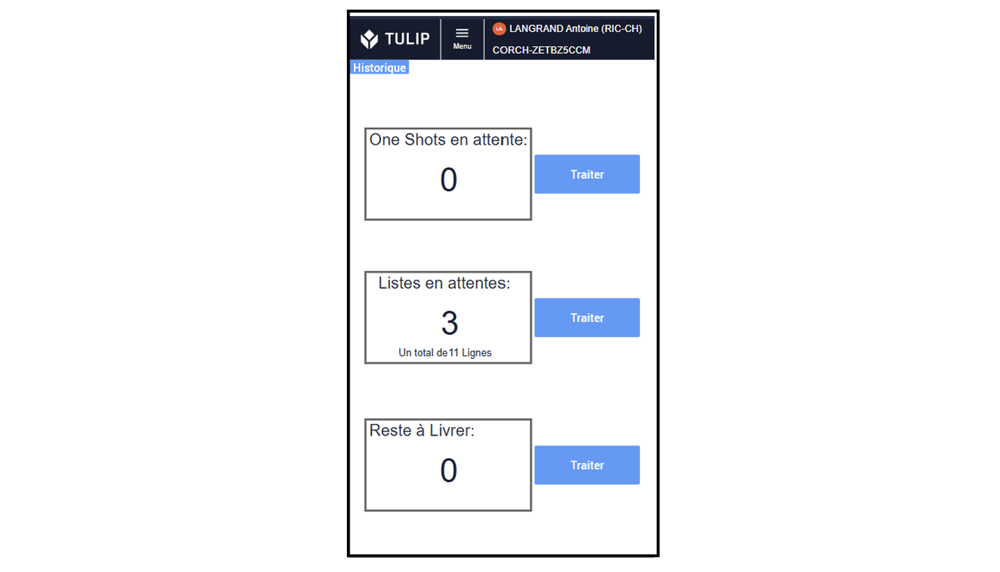
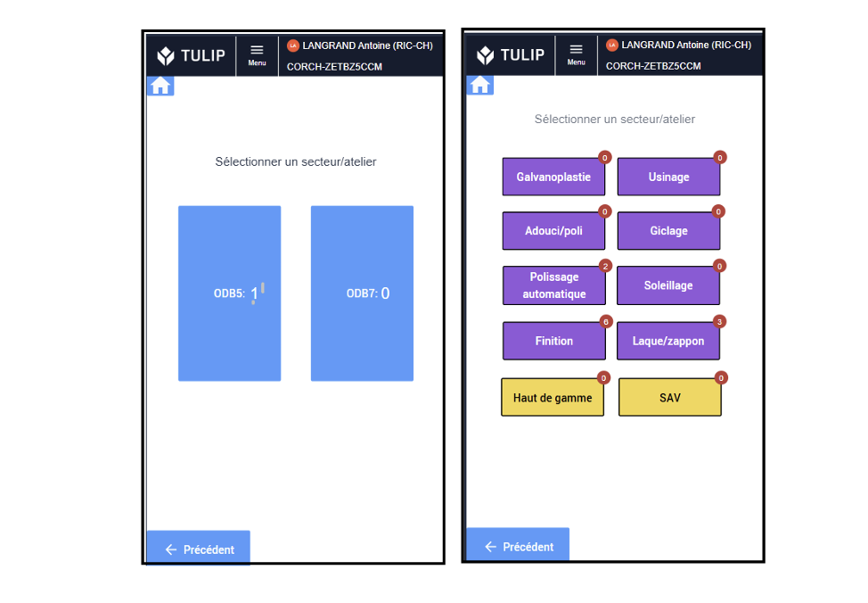
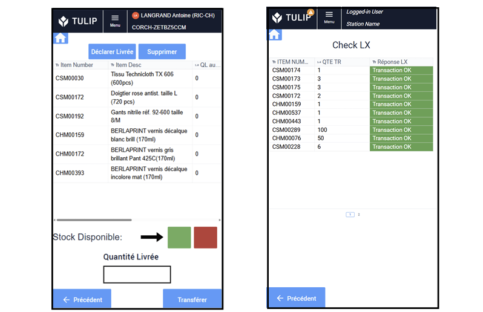
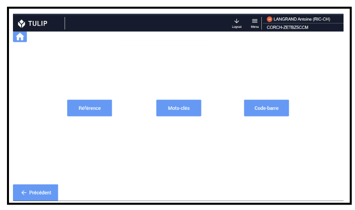
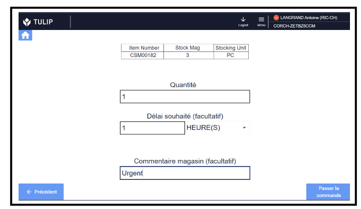
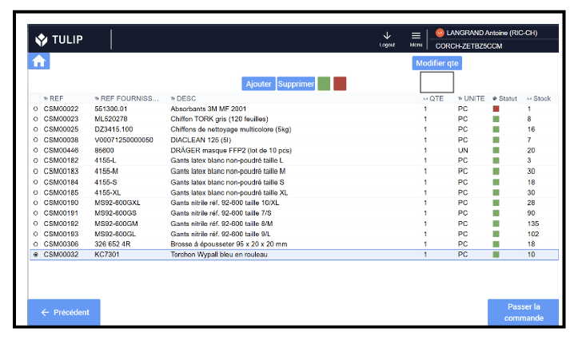

Stage de fin d'étude
Procadrans
Amélioration continue des flux physiques et informatiques en logistique
Un réseau de cinq Manufactures Richemont assure la fabrication et la fourniture des ressources nécessaires pour répondre aux besoins des différentes Maisons du groupe, notamment en matières premières et en composants non brandés. Parmi ces Manufactures, Procadrans est spécialisée dans la conception et le développement de cadrans destinés aux Maisons horlogères du groupe.
Comment améliorer et standardiser les processus de logistique d'exécution en vue de permettre un pilotage des flux d'achats et de consommations des consommables basé sur les données ERP ?
Contexte
La gestion des flux de consommables de production était peu standardisée et faiblement automatisée, limitant ainsi la traçabilité ainsi que le pilotage des achats et des consommations. Cette situation entraînait une désynchronisation entre les flux physiques et les flux informatiques, pouvant générer des écarts entre les stocks physiques et ceux enregistrés dans l'ERP. Les données disponibles dans l'ERP ne reflétaient alors pas fidèlement les consommations réelles des différents ateliers, les rendant difficilement exploitables.
Objectifs
- Synchronisation (à l'heure) des flux physiques et informatiques de consommation des consommables.
- Approvisionnement des consommables automatisé et basé sur les données de l'ERP (état des stocks, cycle de vie, stock min, lead time).
- Collecte de données précises sur les commandes (qui, quoi, quand, où).
- Mise en place de KPIs croisant données MES et ERP.
- Développement de tableaux de bord Power BI pour monitorer ces KPIs.
En pratique

Interface magasin / production
La solution s'appuie sur deux applications complémentaires. La première, développée sous Tulip, permet aux collaborateurs de production de saisir et de suivre leurs demandes de consommables. Chaque commande est enregistrée et tracée dans une table dédiée, garantissant ainsi un suivi complet des demandes. La seconde application est destinée au magasinier. Elle lui permet de consulter les commandes, de les préparer et de les traiter, puis d'effectuer automatiquement les transferts de stocks correspondants dans l'ERP directement depuis l'application.


Interface Magasin - Choix du type de commande
Choix du type de commandes à traiter : ponctuelles ("one-shots"), récurrentes ("listes") ou reliquats ("reste à livrer").

Interface Magasin - Choix du secteur et de l'atelier
Choix du secteur et de l'atelier dont les commandes sont à préparer, avec une bulle indiquant le nombre de commandes en attente.

Interface Magasin - Affichage, transfert ERP et vérification
Sélection des commandes préparées et des quantités livrées, puis transfert de stock dans l'ERP en un clic, suivi d'un écran de vérification.

Interface Production - Recherche de la référence
Recherche par référence, mots-clés ou codes-barres, côté production.

Interface Production - Commande ponctuelle
Renseignement du délai souhaité, de la quantité souhaitée et d'un commentaire pour le magasinier (ex : Urgent).

Interface Production - Commande récurrente
Liste automatiquement spécifique à chaque atelier : sélection ou désélection de références, modification des quantités, ajout ou suppression d'éléments.
Interface magasin / fournisseur
La formalisation des besoins en approvisionnement est automatisée grâce à des requêtes SQL permettant d'identifier et de recenser, dans un fichier Excel, les références à commander. La sélection des articles s'appuie sur les paramètres renseignés dans les fiches articles de l'ERP (stock minimum, délai d'approvisionnement, cycle de vie et taille de lot) ainsi que sur le niveau de stock disponible dans le système. Afin de garantir la fiabilité et la pérennité de l'outil de passage des commandes fournisseurs, les données des fiches articles sont réévaluées et mises à jour tous les six mois. Cette mise à jour est réalisée à l'aide d'un outil d'analyse combinant Excel, SQL et LX Connector, qui exploite les données de consommation récentes afin d'ajuster les paramètres d'approvisionnement au plus près des besoins réels.

Conduite du changement
Formation du personnel, audits réguliers du déploiement de la solution en production, rédaction de la documentation nécessaire pour assurer une continuité de service efficiente.
Résultats
- Un flux informatique qui suit à l'heure le flux physique.
- Fiabilité des stocks obtenue grâce à une meilleure synchronisation entre les mouvements physiques et leur traduction dans l'ERP.
- Mise en place d'une méthode unique, standardisée et robuste de passage des commandes de consommables (de la production au magasin, en interne).
- Déploiement d'outils de passage de commandes (interface entre le magasin et le fournisseur) directement pilotés par les données de l'ERP afin de fiabiliser et de simplifier l'approvisionnement en consommables.
Projets annexes
Tableaux de bord Power BI (données MES et ERP)
- Analyse et valorisation des transferts de stocks par typologie, secteur et Entité Autonome de Production (EAP).
- Indicateurs de pilotage et d'alerte pour identifier écarts, anomalies et situations à surveiller.
- Suivi de l'usage des applications: taux d'utilisation, segmentation des utilisateurs, analyse des usages.
- Suivi, qualification et catégorisation des incidents (erreurs API, fonctionnelles, utilisateurs) pour cibler les principales sources de dysfonctionnement.
Key User Tulip
- Participation à la définition et au pilotage de la roadmap.
- Support opérationnel des outils déjà livrés.
- Identification des besoins et des gains potentiels sur le terrain.
- Standardisation des bonnes pratiques Tulip au niveau de la manufacture, avec les chefs de projet et les autres stagiaires.
- Monitoring Power BI des applications et log des erreurs.
- Relais de la manufacture auprès du groupe.
Application Tulip d'affichage au poste
- Affichage sur tablette au poste des plans via recherche par référence (technique, esthétique, phase, usinage), avec moteur de recherche optimisé minimisant la saisie tout en garantissant que le bon plan soit proposé (API Windchill).
- Gain de temps pour les opérateurs et pour les gestionnaires de stocks, qui ne cherchent et n'impriment plus les références un par un.
- Affichage sur tablette du planning réalisé par l'ordonnanceur du secteur, pour une planification plus agile.
Réaménagement 5S
- Seiton — Ranger : réorganisation du local explosifs pour attribuer une place dédiée à chaque famille de consommables et faciliter leur identification.
- Seiketsu — Standardiser : uniformisation et labellisation des rayonnages selon un ordre alphanumérique.
- Seiso — Nettoyer : espace propre et organisé permettant de détecter plus facilement les anomalies.
- Shitsuke — Maintenir : formation des collaborateurs aux nouvelles méthodes de rangement pour en assurer l'application durable.